Public schizophrenia GWAS by sex
Association height is -log10(P). Z-score and signed-LD labels describe point color. Click any figure for its full-resolution PNG.
SAS ODA
SAS ODA: Genome-wide Manhattan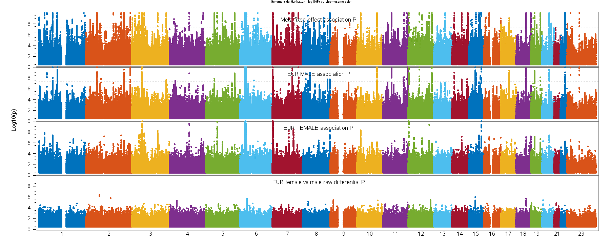
SAS ODA: Local Manhattan, chromosome colors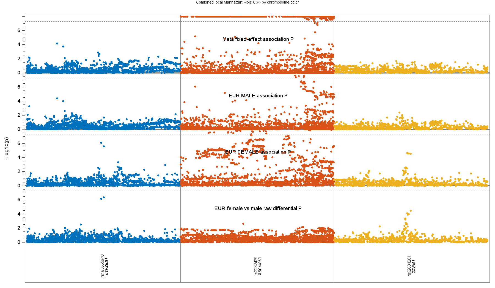
SAS ODA: Local Manhattan and gene tracks, signed LD r^2 x sign(Z) (rs185665940)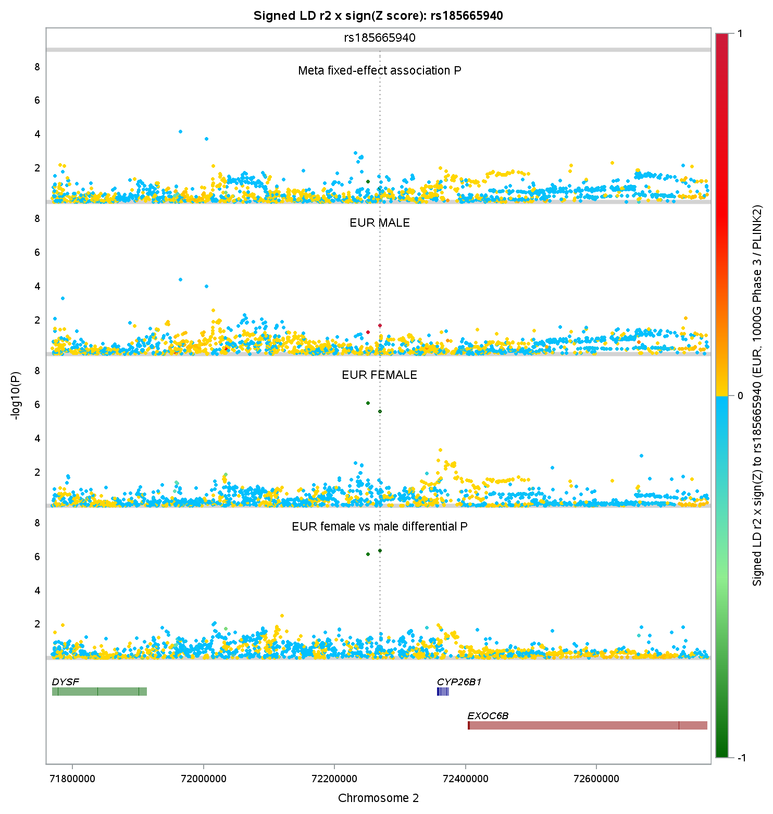
SAS ODA: Local Manhattan and gene tracks, signed LD r^2 x sign(Z) (rs2232429)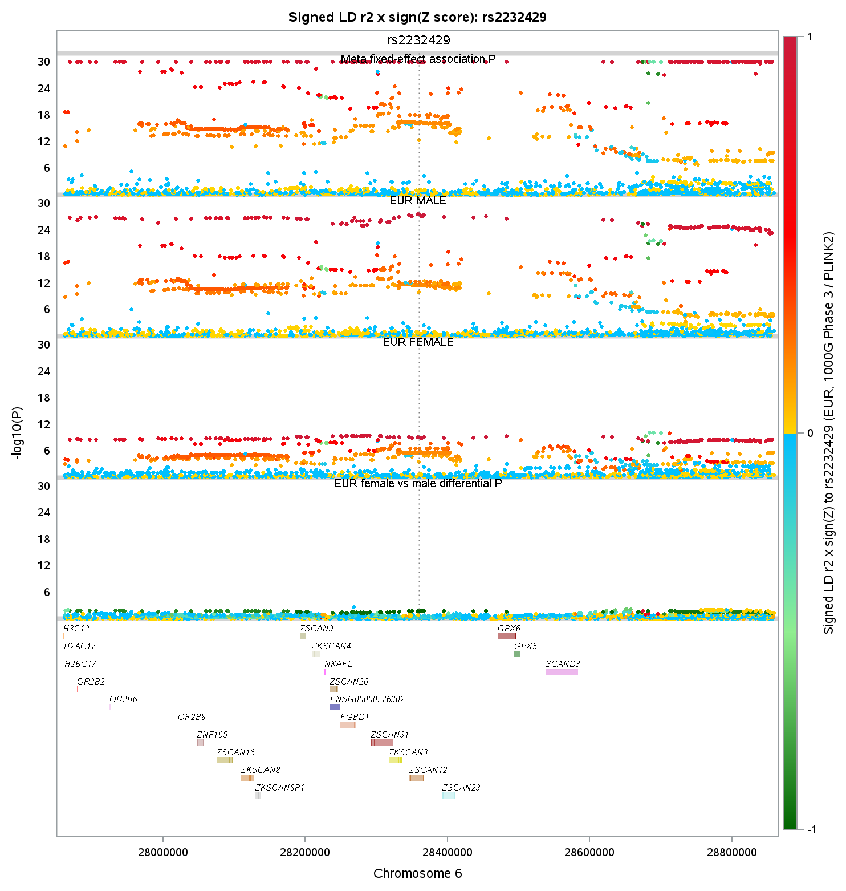
SAS ODA: Local Manhattan and gene tracks, signed LD r^2 x sign(Z) (rs62604261)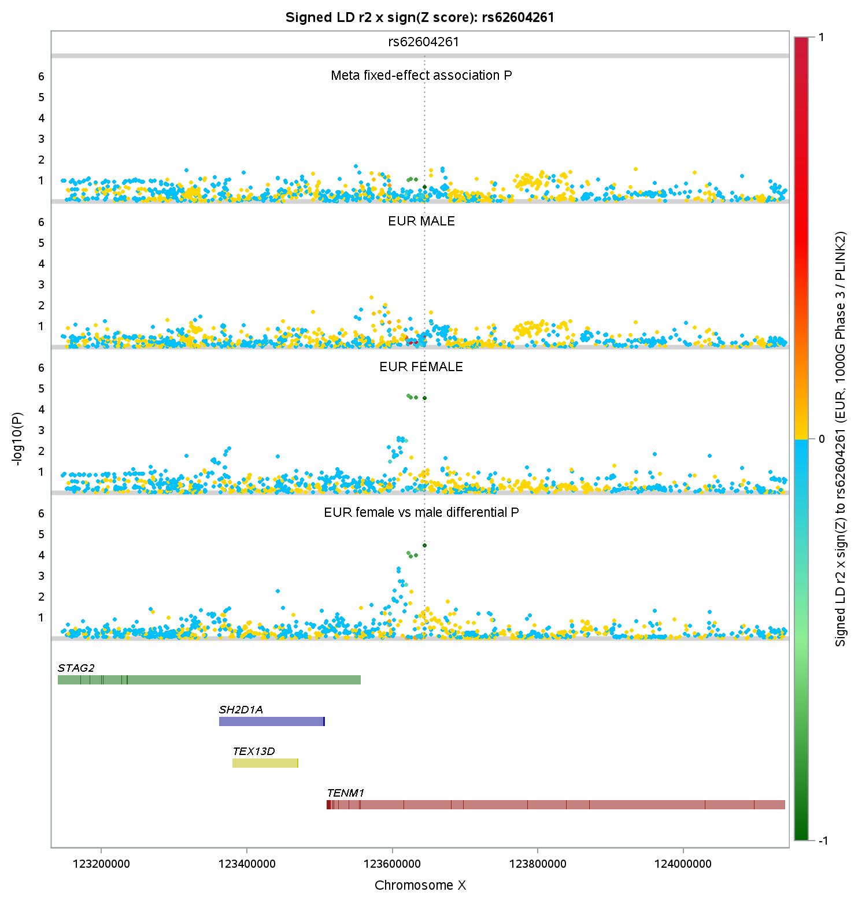
SAS ODA: Forest plot (female)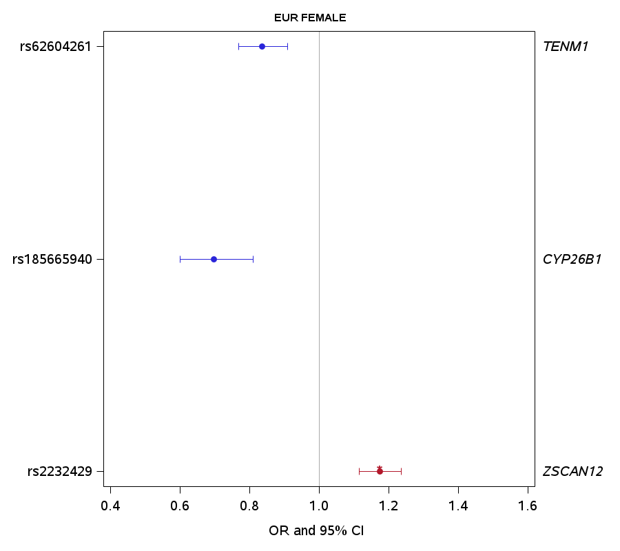
SAS ODA: Forest plot (male)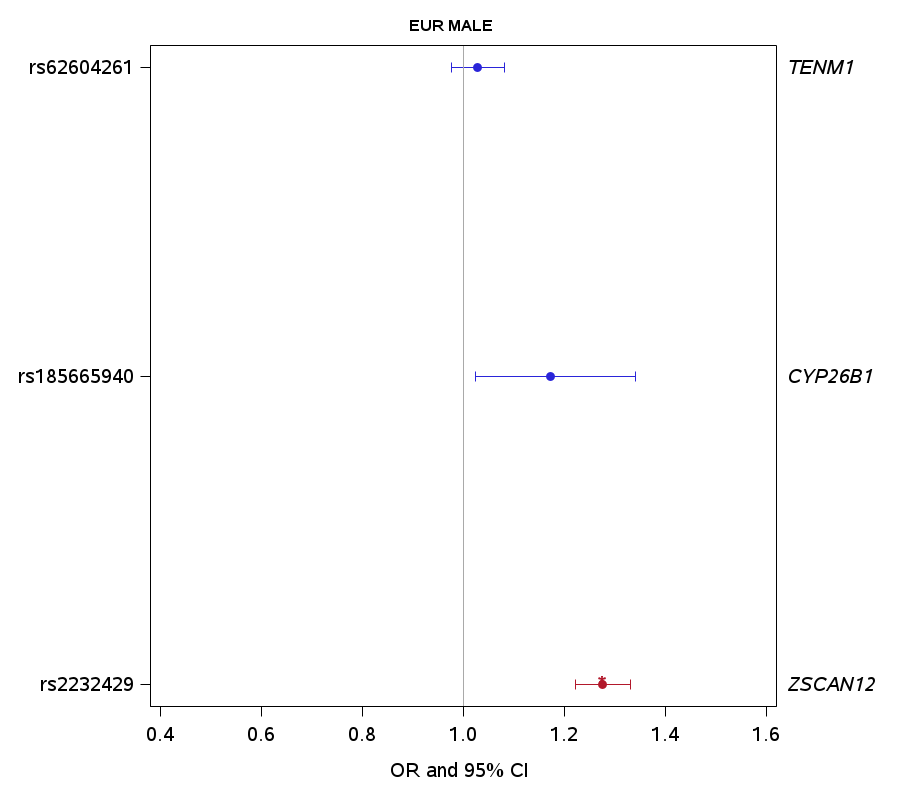
gnuplot
gnuplot: Genome-wide Manhattan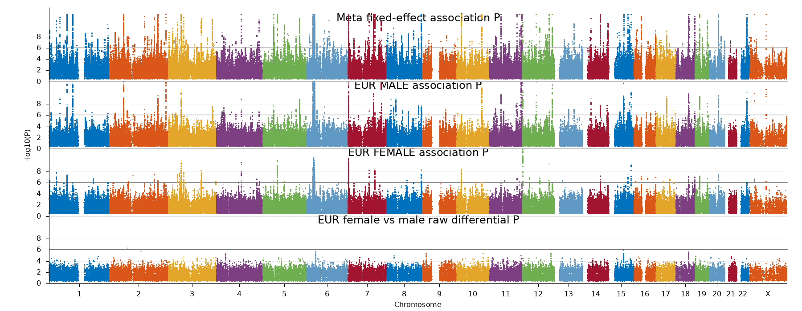
gnuplot: Local Manhattan, Z-score colors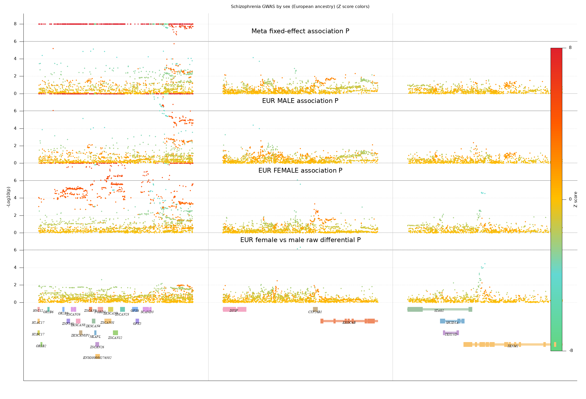
gnuplot: Local Manhattan, Z-score colors (rs185665940)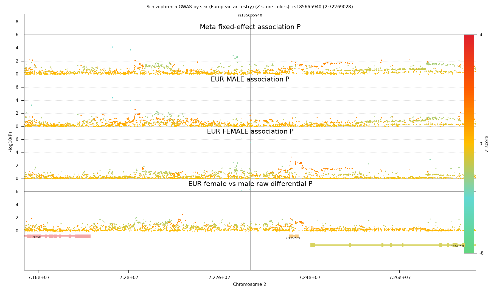
gnuplot: Local Manhattan, Z-score colors (rs2232429)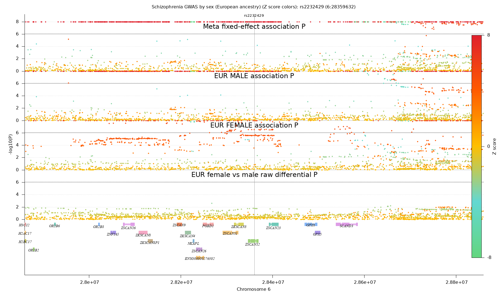
gnuplot: Local Manhattan, Z-score colors (rs62604261)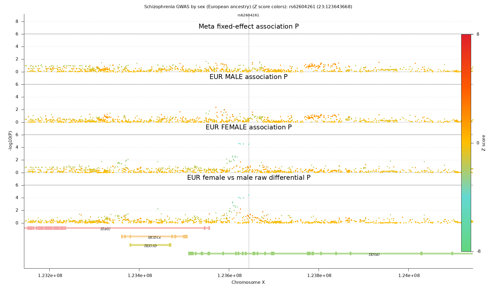
gnuplot: Local Manhattan and gene tracks, signed LD r^2 x sign(Z) (rs185665940)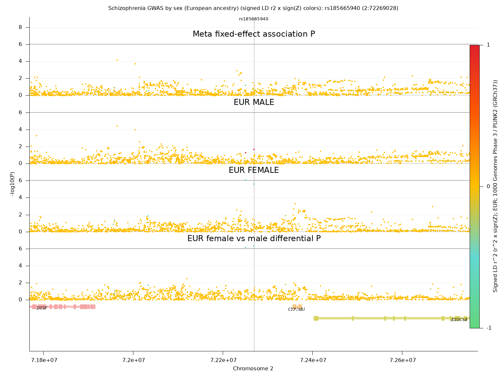
gnuplot: Local Manhattan and gene tracks, signed LD r^2 x sign(Z) (rs2232429)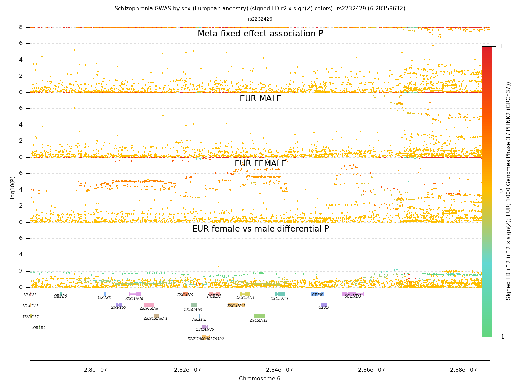
gnuplot: Local Manhattan and gene tracks, signed LD r^2 x sign(Z) (rs62604261)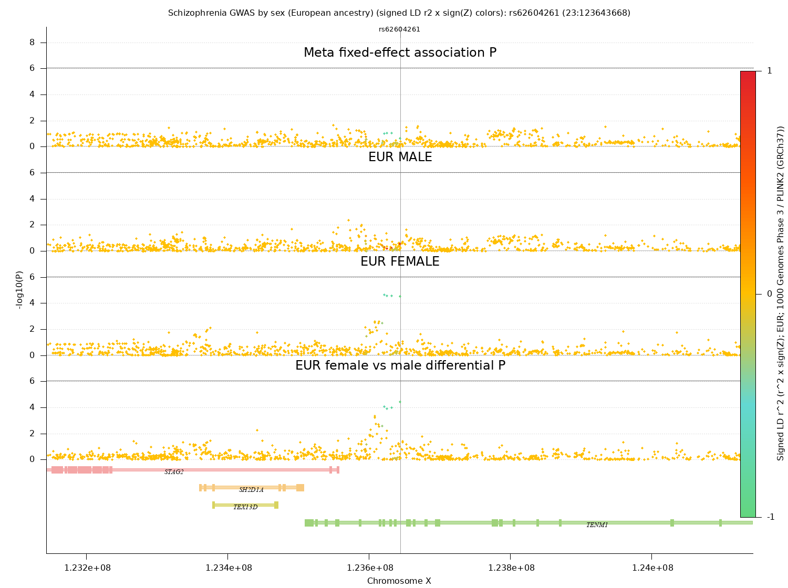
gnuplot: Forest plot (female) gnuplot: Forest plot (male)
gnuplot: Forest plot (male) gnuplot: Forest plot (combined)
gnuplot: Forest plot (combined)